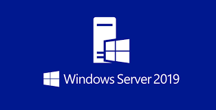
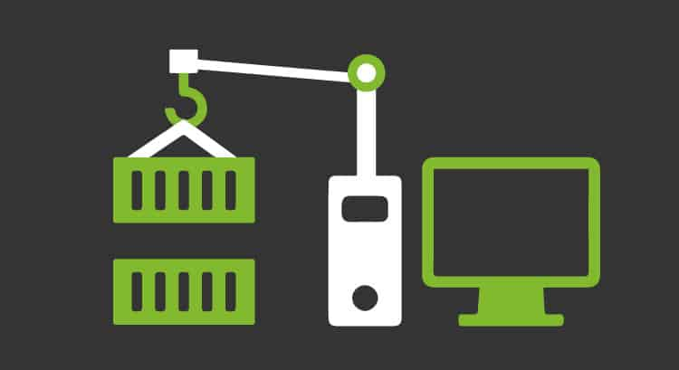
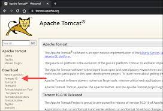

En esta guía se realizaron los pasos de instalación del software VMware, dando como resultado, el conocimiento de un nuevo entorno de virtualización y cuáles son los pasos necesarios para instalarlo correctamente
En esta guía se descargo la Iso de Windows server 2019 para posteriormente utilizarla en una maquina virtual, dando como resultado, el conocimiento del lugar donde descargar Isos oficiales de Windows server y de igual manera, la creación de una maquina virtual utilizando dicha Iso.
Esta guía se realizo en parejas con el fin de dar a conocer las diferencias entre las funcionalidades y características en general de los Servidores, tanto en el sistema Windows, como en el sistema Linux, de esta manera se adquirieron conocimientos sobre características y diferencias entre servidores.
Esta guía se realizo con el fin de realizar pasos necesarios para la instalación y configuración de Contenedores Docker en ambiente Windows para implementar aplicaciones web

Esta guía se realizo con el fin de demostrar como instalar Docker en el sistema operativo Ubuntu, dando como resultado el conocimiento de nuevos comandos y de igual manera una correcta instalación de Docker.
Esta guía se realizó con el fin de aplicar el aprendizaje sobre contenedores Docker para crear un contenedor de sitio web estático en Windows 10, dando como resultado nuevo aprendizaje sobre comandos Docker y demás funciones
Esta guía no pudo ser realizada por mi parte debido a fallos con la máquina virtual de Windows server El objetivo de esta guía era realizar los pasos necesarios para la configuración del contenedor de Servlets Apache Tomcat en GUN/Linux Ubuntu 20.04 LTS, dando como resultado el conocimiento de nuevos comandos al igual sobre como descargar tomcat.
no hay link
El objetivo de esta guía era realizar los pasos necesarios para la configuración del contenedor de Servlets Apache Tomcat en GUN/Linux Ubuntu 20.04 LTS, dando como resultado el conocimiento de nuevos comandos al igual sobre como descargar tomcat.

created with
Website Builder Software .